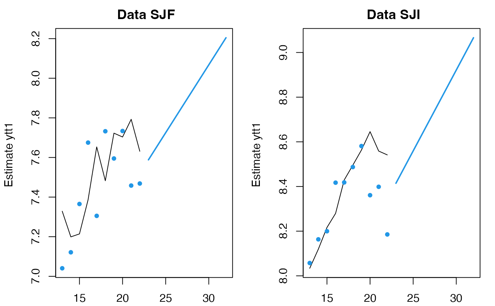

Plot MARSS Forecast and Predict objects
plot_marssPredict.RdPlots forecasts with prediction (default) or confidence intervals using base R graphics (plot) and ggplot2 (autoplot). The plot function is built to mimic plot.forecast in the forecast package in terms of arguments and look.
Usage
# S3 method for marssPredict
plot(x, include, decorate = TRUE, main = NULL, showgap = TRUE,
shaded = TRUE, shadebars = (x$h < 5 & x$h != 0), shadecols = NULL, col = 1,
fcol = 4, pi.col = 1, pi.lty = 2, ylim = NULL,
xlab = "", ylab = "", type = "l", flty = 1, flwd = 2, ...)
# S3 method for marssPredict
autoplot(x, include, decorate = TRUE, plot.par = list(), ...)Arguments
- x
marssPredict produced by
forecast.marssMLE()orpredict.marssMLE().- include
number of time step from the training data to include before the forecast. Default is all values.
- main
Text to add to plot titles.
- showgap
If showgap=FALSE, the gap between the training data and the forecasts is removed.
- shaded
Whether prediction intervals should be shaded (TRUE) or lines (FALSE).
- shadebars
Whether prediction intervals should be plotted as shaded bars (if TRUE) or a shaded polygon (if FALSE). Ignored if shaded=FALSE. Bars are plotted by default if there are fewer than five forecast horizons.
- shadecols
Colors for shaded prediction intervals.
- col
Color for the data line.
- fcol
Color for the forecast line.
- pi.col
If shaded=FALSE and PI=TRUE, the prediction intervals are plotted in this color.
- pi.lty
If shaded=FALSE and PI=TRUE, the prediction intervals are plotted using this line type.
- ylim
Limits on y-axis.
- xlab
X-axis label.
- ylab
Y-axis label.
- type
Type of plot desired. As for plot.default.
- flty
Line type for the forecast line.
- flwd
Line width for the forecast line.
- ...
Other arguments, not used.
- decorate
TRUE/FALSE. Add data points and CIs or PIs to the plots.
- plot.par
A list of plot parameters to adjust the look of the plot. The default is
list(point.pch = 19, point.col = "blue", point.fill = "blue", point.size = 1, line.col = "black", line.size = 1, line.type = "solid", ci.fill = NULL, ci.col = NULL, ci.linetype = "blank", ci.linesize = 0, ci.alpha = 0.6, f.col = "#0000AA", f.linetype = "solid", f.linesize=0.5, theme = theme_bw()).
Author
Eli Holmes and based off of plot.forecast in the forecast package written by Rob J Hyndman & Mitchell O'Hara-Wild.
Examples
data(harborSealWA)
dat <- t(harborSealWA[, -1])
fit <- MARSS(dat[1:2,])
#> Success! abstol and log-log tests passed at 17 iterations.
#> Alert: conv.test.slope.tol is 0.5.
#> Test with smaller values (<0.1) to ensure convergence.
#>
#> MARSS fit is
#> Estimation method: kem
#> Convergence test: conv.test.slope.tol = 0.5, abstol = 0.001
#> Estimation converged in 17 iterations.
#> Log-likelihood: 7.867711
#> AIC: -1.735423 AICc: 2.264577
#>
#> Estimate
#> R.diag 0.01348
#> U.X.SJF 0.06852
#> U.X.SJI 0.07242
#> Q.(X.SJF,X.SJF) 0.02037
#> Q.(X.SJI,X.SJI) 0.00961
#> x0.X.SJF 6.01228
#> x0.X.SJI 6.74861
#> Initial states (x0) defined at t=0
#>
#> Standard errors have not been calculated.
#> Use MARSSparamCIs to compute CIs and bias estimates.
#>
fr <- predict(fit, n.ahead=10)
plot(fr, include=10)

# forecast.marssMLE does the same thing as predict with h
fr <- forecast(fit, n.ahead=10)
plot(fr)
# without h, predict will show the prediction intervals
fr <- predict(fit)
plot(fr)
# you can fit to a new set of data using the same model and same x0
fr <- predict(fit, newdata=list(y=dat[3:4,]), x0="use.model")
plot(fr)
# but you probably want to re-estimate x0
fr <- predict(fit, newdata=list(y=dat[3:4,]), x0="reestimate")
plot(fr)
# forecast; note h not n.ahead is used for forecast()
fr <- forecast(fit, h=10)